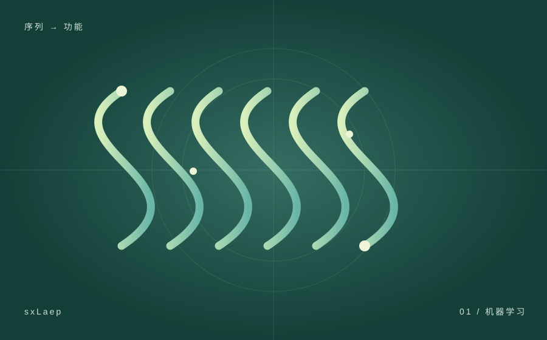

sxLaep 酶预测工具
面向高通量酶预测的轻量化工具包，结合可复现的软件工程流程与基准测试。
共同第一作者 · 工具工程化与基准测试
项目详情
- 参与基于 scikit-learn/XGBoost 的高通量酶/非酶分类流程，并协助模型推理与结果验证；项目在 new-392 测试集上的准确率达到 99.49%。
- 主要负责工具工程化与基准测试流程，包括 PyPI 发布、Docker 环境配置、可复现使用文档，以及不同工具的运行时间、峰值内存与分类性能评测。
- 状态：v1.0.0 已发布于 GitHub 与 PyPI；已有 bioRxiv 预印本。稿件已完成，拟投稿至 IEEE/ACM Transactions on Computational Biology and Bioinformatics（TCBB）。